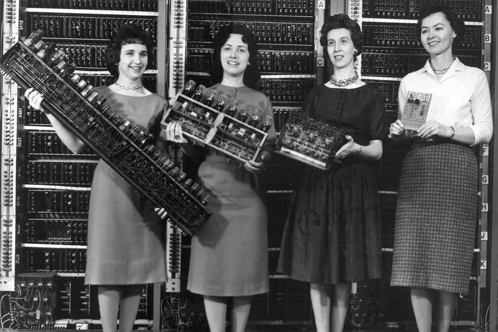
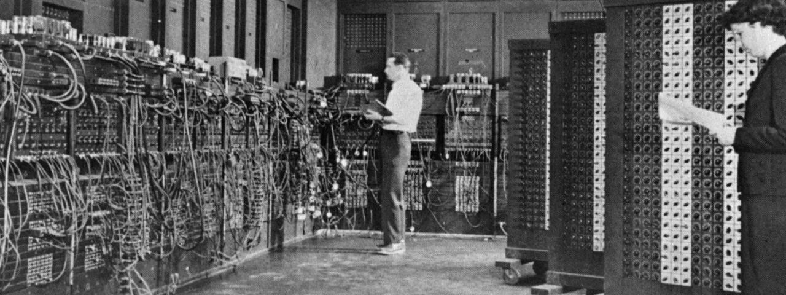

ENIAC (Electronic Numerical Integrator and Computer) foi o primeiro computador digital e eletrônico programável do mundo. A sigla, que significa "Computador e Integrador Numérico Eletrônico", representa um marco na história da computação. O que pouca gente sabe é que a máquina foi desenvolvida por uma equipe majoritariamente feminina: seis mulheres foram as principais programadoras do computador que mudou os rumos da informática. No entanto, sua participação foi bastante ofuscada ao longo da história, e começou a ser reconhecida várias décadas depois.

Para programar o ENIAC, era necessário utilizar fios e interruptores para definir as operações a serem realizadas, o que tornava o processo extremamente demorado e propenso a erros. Além disso, a programação do computador precisava ser completamente refeita sempre que uma tarefa diferente era executada. Para salvar as informações, eram utilizados cartões perfurados.

Durante a Segunda Guerra Mundial, havia uma escassez de trabalhadores, já que a maioria dos homens em idade laboral era convocada para atuar como soldados. Então, em 1942, um anúncio no jornal Philadelphia Evening Bulletin promovido pelo exército americano buscava mulheres graduadas em matemática para trabalhar na Escola Moore de Engenharia Eletrônica da Universidade da Pensilvânia.
Kathleen McNulty Mauchly Antonelli, Jean Jennings Bartik, Frances Elizabeth Snyder, Frances Bilas Spence, Marlyn Wescoff Meltzer e Ruth Lichterman Teitelbaum foram as mulheres contratadas, além de cinco homens. O computador, tal qual conhecemos hoje, passou por diversas transformações e foi se aperfeiçoando ao longo do tempo, acompanhando o avanço das áreas da matemática, engenharia, eletrônica. É por isso que não existe somente um inventor. De acordo com os sistemas e ferramentas utilizados, a história da computação está dividida em cinco períodos.
Primeira Geração (1951-1959).

Os computadores de primeira geração funcionavam por meio de circuitos e válvulas eletrônicas. Possuíam o uso restrito, além de serem imensos e consumirem muita energia. Um exemplo é o ENIAC que consumia cerca de 200 quilowatts de energia e possuía 19.000 válvulas.